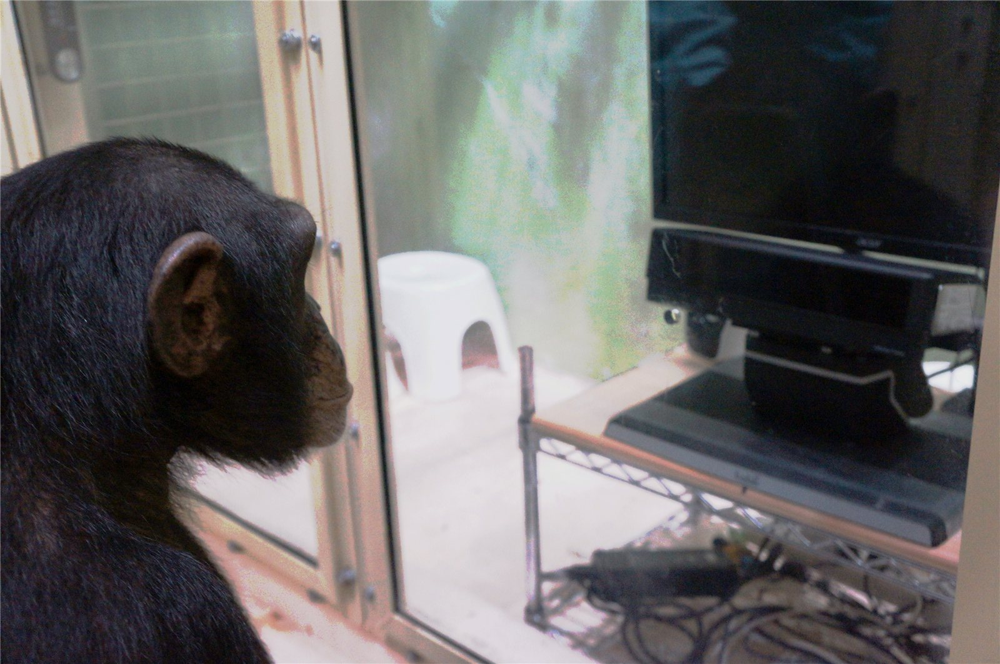
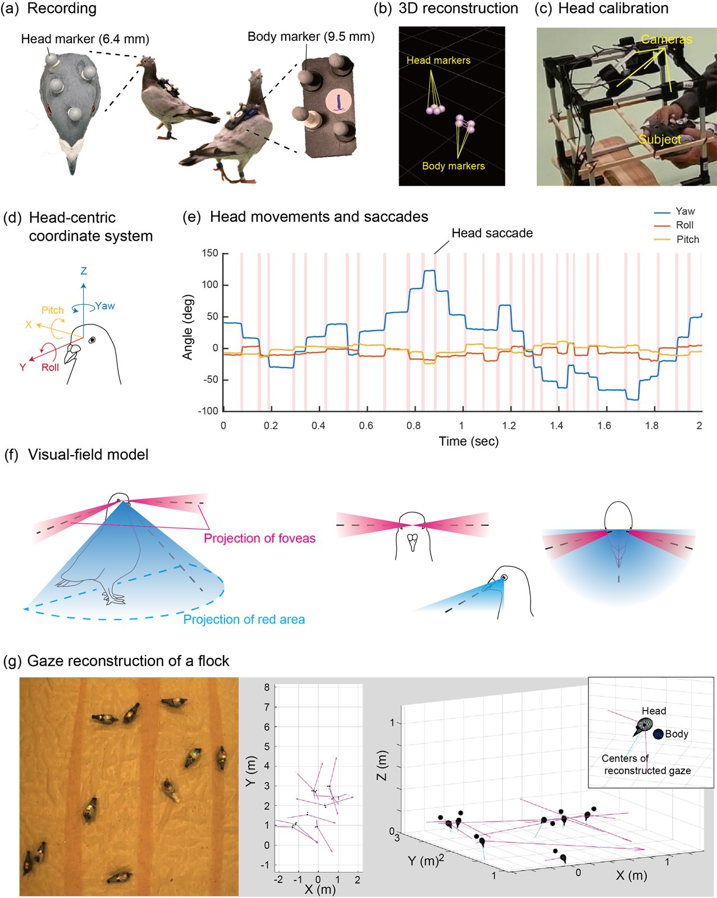

認知を問う
相手は何を見て、何を知っているのか。霊長類を中心に、心の理論、情報伝達、協調を考えます。
比較認知 · 心の理論
社会認知の研究へ ↓RESEARCH
サル・類人猿の社会認知を中心に、集団行動と心の理論、成人・子どもの視線、自然な行動の計測、目の色とコミュニケーションをつないで研究しています。
CURRENT RESEARCH
集団の中で、他者の視線や行動から何を理解するのか。
研究の詳細へ ↓02成人・子どもの視線アニメーション課題から、先読みする視線を調べる研究計画。
研究の詳細へ ↓03コンピュータビジョン自然な行動を、映像と3D解析で定量化する。
研究の詳細へ ↓04目の色と白目目の特徴が、視線の伝わり方にどう関わるのか。
研究の詳細へ ↓相手は何を見て、何を知っているのか。霊長類を中心に、心の理論、情報伝達、協調を考えます。
比較認知 · 心の理論
社会認知の研究へ ↓視線や頭の向き、身体の動きを定量化。アイトラッキングと3D動物トラッキングで、注意と社会的な文脈を結びつけます。
視線計測 · 3Dトラッキング
視線を用いた研究計画へ ↓知りたい行動が、まだ測れないなら。コンピュータビジョンや解析手法を組み合わせ、研究の問いに合う道具を考えます。
コンピュータビジョン · 解析
行動計測の技術と映像へ ↓実験室で深めた問いを、自然な社会環境へ。視線だけで心を断定せず、周囲の状況や行動と合わせて解釈します。
CURRENT PROJECTS IN DETAILここから、具体的な研究へ。
01 / PRIMATES · SOCIAL COGNITION
相手は何を見て、何を知っているのか。サル・類人猿の視線や行動予測、仲間とのやりとりから、社会の中で働く心を調べます。個体の認知と集団の行動を結びつけ、実験課題と自然な社会場面の両方から考えます。
サルは、周囲の仲間の動きや選択をどう手がかりにして行動するのでしょうか。集団の中での採食場所の選択を観察し、カメラや自動計測の技術を使って、個体と集団の意思決定を調べています。
クリックするまでYouTubeには接続しません。自動再生・自動音声はありません。
狩野文浩制作・投稿。「koshima sample 4」· 2022年投稿 · 約1分30秒。
既存の発表資料にある方法例です。現在の九州大学の設備・活動を示すものとは限りません。

類人猿のアイトラッキング場面。画面上の情報を見る行動を測る方法の紹介です。
02 / HUMANS · DEVELOPMENT
研究計画・課題開発アニメーションの登場人物が何を見て、どこに物があると思っているかを手がかりに、次の行動を予測する視線を調べます。成人での課題検討を踏まえ、子どもの研究へと展開し、言葉の答えだけに頼らず社会認知を探る計画です。
ALFBは、他者が誤った情報に基づいて行動する場面で、先回りして向けられる視線を調べる課題です。下の映像はヒト向けのアニメーション刺激の例で、参加者の映像や研究結果を示すものではありません。
クリックするまでYouTubeには接続しません。自動再生・自動音声はありません。
狩野文浩制作・投稿 · 動画タイトル：oToM FB1 L。関連する科研費課題 ↗
03 / COMPUTER VISION · NATURAL BEHAVIOUR
進行中・計測技術開発映像から個体の位置、姿勢、行動を捉え、自然な環境や集団の中での行動を定量化します。3D再構成やAIによる映像解析を、霊長類の研究と結びつけて発展させています。
YOLO-Behaviourは、動画から動物の行動を自動的に分類・定量化する公開手法です。補足動画は複数の研究系における方法の紹介で、現在の九州大学のサル研究の成果映像とは区別しています。
クリックするまでYouTubeには接続しません。自動再生・自動音声はありません。
Alex Chan投稿 · コンスタンツ大学の紹介 ↗ · 手法のチュートリアルを見る ↗
PUBLISHED TOOLS & DATASETS
以下は鳥類を対象にした公表済みのデータセットです。現在の霊長類研究とは対象を区別し、コンピュータビジョンの方法例として紹介します。
スウェーデン・ラップランドの野生のシベリアカケスを対象に、個体の再識別、行動、2Dキーポイント、検出・領域分割をまとめたデータセットです。3D-SOCSとは別のプロジェクトです。
クリックするまでYouTubeには接続しません。自動再生・自動音声はありません。
Alex Chan投稿 · “Frame by Frame” official track for CHIRP dataset CVPR 2026。プロジェクト紹介映像です。大学のプロジェクト紹介 ↗
マーカー付きモーションキャプチャを使って画像に自動で注釈を付け、マーカーレスな姿勢推定を支えるデータセットです。鳥の身体の動きを捉えるための、計測と学習データ作成をつなぐ方法を紹介します。
クリックするまでYouTubeには接続しません。自動再生・自動音声はありません。
Hemal Naik投稿 · 著者による2023年論文の解説です。動画タイトル：3D-POP : Posture of Pigeon paper explained in 6 mins.
04 / EYE COLOUR · GAZE COMMUNICATION
進行中・仮説の検討ヒトや他の霊長類の目の色や白目は、視線の伝わり方にどう関わるのでしょうか。種間比較と行動実験を通じて、明るさや距離などの条件による違いを調べ、視線シグナルの進化に関する仮説を検討しています。
2022年の画像を用いた実験と、2026年の実際のモデルを用いた研究では、提示条件による違いも検討しています。白目の優位性をすべての状況に一般化するものではありません。
クリックするまでYouTubeには接続しません。自動再生・自動音声はありません。
コンスタンツ大学掲載 · Universität Konstanzチャンネル · 映像の掲載元 ↗
PREVIOUS RESEARCH
ハト・カラスの公表済み研究と、アート・動物福祉の取り組みをまとめています。ここでの配置は、これらの分野の研究がすべて終了したことを意味しません。
頭部センサー、モーションキャプチャ、3D姿勢推定を用いて、自由に動くハトの視野利用や集団での注意を調べてきました。これらの研究で培った計測・解析の方法は、自然な行動の研究につながっています。
捕食者の位置に関する情報が、ハトの仲間の視線を手がかりにどう伝わるかを紹介する約2分の研究映像です。
クリックするまでYouTubeには接続しません。自動再生・自動音声はありません。
狩野文浩制作・投稿。対応する研究：Rapid Social Transmission of Predator Location via Gaze Following in Pigeons · プレプリント ↗
頭部の向きや姿勢を記録し、自由に動く個体の注意や行動を調べるための方法です。図はそれぞれの研究の出典に結びつけています。

マーカーの3D計測と頭部校正を視野モデルに結びつける方法図。頭部方向に基づく推定であり、眼球運動の直接計測とは区別します。
図をクリックすると全体を拡大できます。元のパネル・グラフを省略せず表示しています。
カラスの注意や社会認知を調べるため、自由に動くハシブトガラスの頭の向きをモーションキャプチャで記録し、視野の構造と組み合わせる方法を開発しました。動く対象と静止した対象で視野の使い方が変わることを示し、鳥類の「見る」を定量的に調べる基盤を築いています。
頭部の向きと視野の構造から推定する方法です。眼球運動の直接計測とは区別し、カラスの心の理論を実証した結果とは位置づけていません。
2024年の論文に付属する公表済みの実験映像です。
京都市動物園でのアート×サイエンス共同研究では、チンパンジーの映像への反応や、インタラクティブな映像を用いた環境エンリッチメントを検討しました。
クリックするまでYouTubeには接続しません。自動再生・自動音声はありません。
狩野文浩制作・投稿。2021年論文で紹介した映像例と比較フレームです。対応する公表論文 ↗


SOCIAL COGNITION · EXPERIMENTAL TASKS
心の理解を、実験場面から考える。
現在の問いにつながる、公表済み研究の映像です。現在の九州大学での実験場面を示すものではありません。
誤信念に基づく行動予測：実験1
登場人物が誤った場所を探すと、類人猿は予測するでしょうか。2016年Science論文に付属する課題映像です。
クリックするまでYouTubeには接続しません。自動再生・自動音声はありません。
実験2：箱に隠した石を探す課題を見る · YouTube ↗
京都大学掲載 · TheFriendsAndAiチャンネル · 映像の掲載元 ↗
自分の経験から、他者の行動を予測する
仕切りが透けるかどうかを自分で経験した類人猿が、相手の行動をどう予測するか。2019年PNAS論文の解説映像です。
クリックするまでYouTubeには接続しません。自動再生・自動音声はありません。
狩野文浩制作・投稿 · 京都大学プレスリリース掲載 · 映像の掲載元 ↗